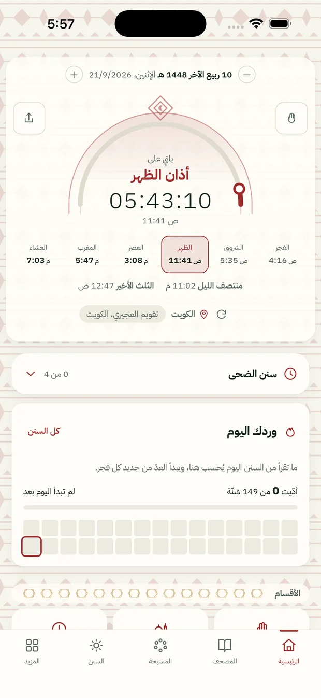
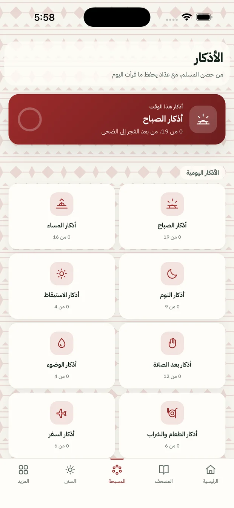
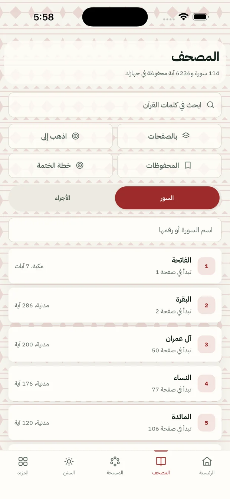
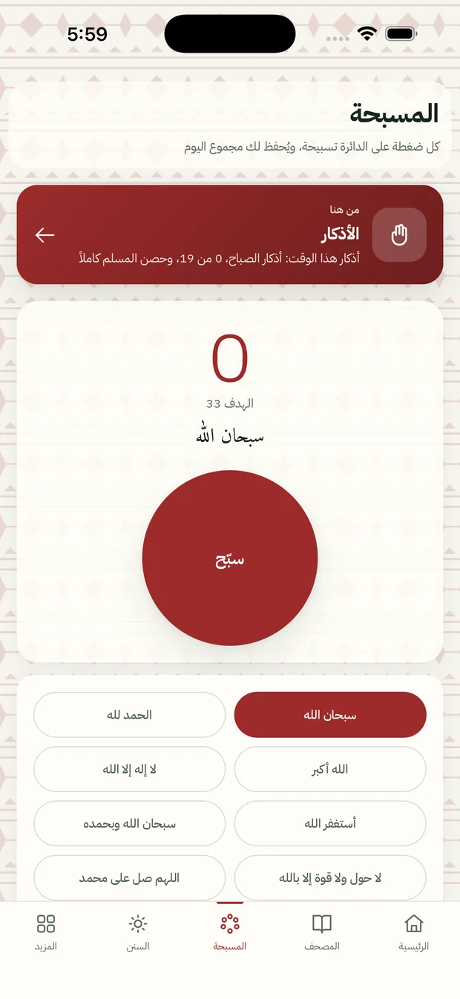
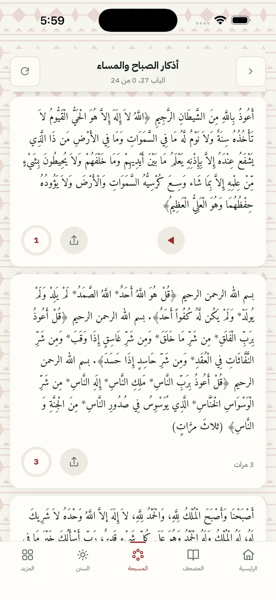
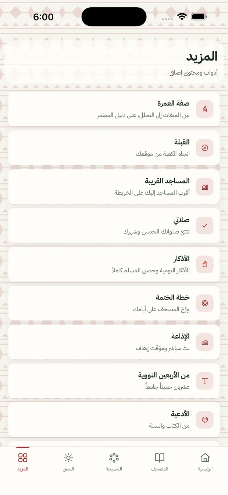

الفجر ٤:١٦ ص
يوقظك الأذان بالصوت الذي تختاره، ويبقى العدّ التنازلي أمامك حتى الصلاة التالية. والمواقيت في الكويت على تقويم العجيري، وفي غيرها تُحسب في جهازك على الطريقة التي تختارها.
وبعده تقرأ وردك من المصحف، ويُحسب لك ما قرأت.

الضحى
أذكار الصباح كاملةً من حصن المسلم، لكل ذكر عدده الذي ورد، وعدّاد يحفظ أين وصلت فإن قطعك شيء رجعت إليه.
وستّة عشر باباً من الأذكار غيرها: الوضوء، والطعام، والسفر، والنوم، وما بينها.

الظهر ١١:٤١ ص
المصحف كاملاً برواية حفص عن عاصم بالرسم العثماني، تقرؤه بالسور أو صفحةً صفحة كالمطبوع، ومعه التفسير الميسّر.
وكل هذا في جهازك، فيفتح في مسجد لا شبكة فيه كما يفتح في بيتك.

العصر ٣:٠٨ م
مسبحة تعدّ لك وتحفظ مجموع يومك، وأذكار ما بعد الصلاة بأعدادها.

المغرب ٥:٤٧ م
حصن المسلم بأبوابه كلها، تقرؤه أو تسمعه، ومعه الأربعون النووية والرقية والأدعية المأثورة.

قبل النوم
يذكّرك بالاستغفار وسورة الملك وآية الكرسي في الوقت الذي تختاره، ولك أن تسمعها بدل أن تقرأها.
وفي ليلة الجمعة يفتح لك سورة الكهف ويذكّرك بالصلاة على النبي صلى الله عليه وسلم.
